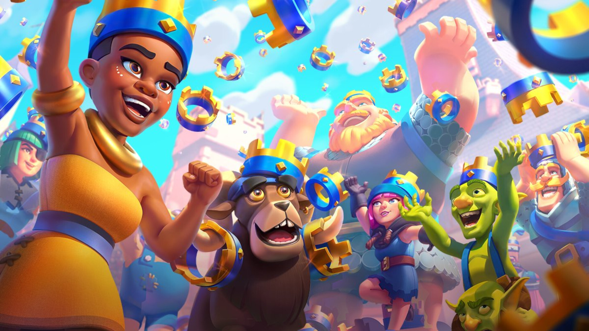

1v1 Compétitif : Le mode principal du jeu. Chaque victoire ou défaite impacte le nombre de trophées et la progression dans les arènes.
1v1 Classique : Un mode sans trophées, idéal pour jouer de manière détendue ou pour tester et apprendre à maîtriser un nouveau deck sans risque.
2v2 : Un mode en équipe de deux joueurs, sans trophées. Parfait pour jouer avec un ami ou un membre du clan.
1v1 avec Modes Spéciaux : Des variantes du 1v1 avec des règles modifiées pour apporter de la nouveauté et du fun au jeu.
Tournois : Des 1v1 compétitifs organisés dans lesquels les joueurs s'affrontent pour remporter des ressources exclusives du jeu.